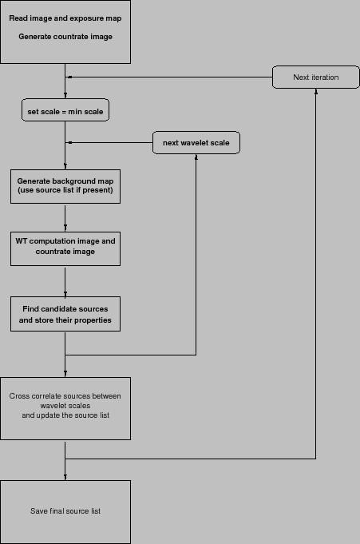

XMM-Newton Science Analysis System
ewavelet (ewavelet-3.11.2) [xmmsas_20170112_1337-16.0.0]
Algorithm
The wavelet detection involves the following steps:
- Read the input image and the exposure map.
- Generate the countrate image from the input image and exposure map.
- Generate the initial background map by scaling the exposure map in such
a way that the background map contains as many ``counts'' as the input image.
- Do the following for several wavelet scales:
- 1
- generate a background map for this particular scale
- 2
- convolve image with the MH wavelet function
- 3
- find local maxima in the convolved image
- 4
- Check if the local maximum is significant
- 5
- If the maximum is significant, add the point to the source list
and calculate the number of counts from the wavelet
correlation value ()
- Determine if some sources were detected at several wavelets scales.
If so, choose the wavelet scale with the highest local correlation value.
- Use the detections of the same source at several wavelet scale to
get some information on the source properties.
- Make a new iteration or generate the final source list.
Figure 4:
Block diagram of the wavelet source detection algorithm.
|  |
XMM-Newton SOC/SSC -- 2017-01-12